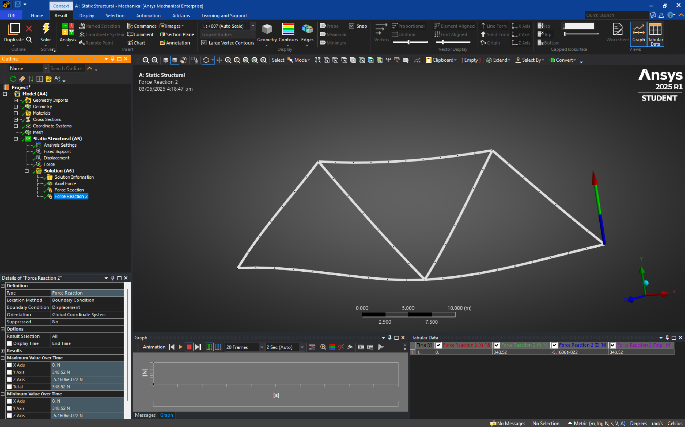
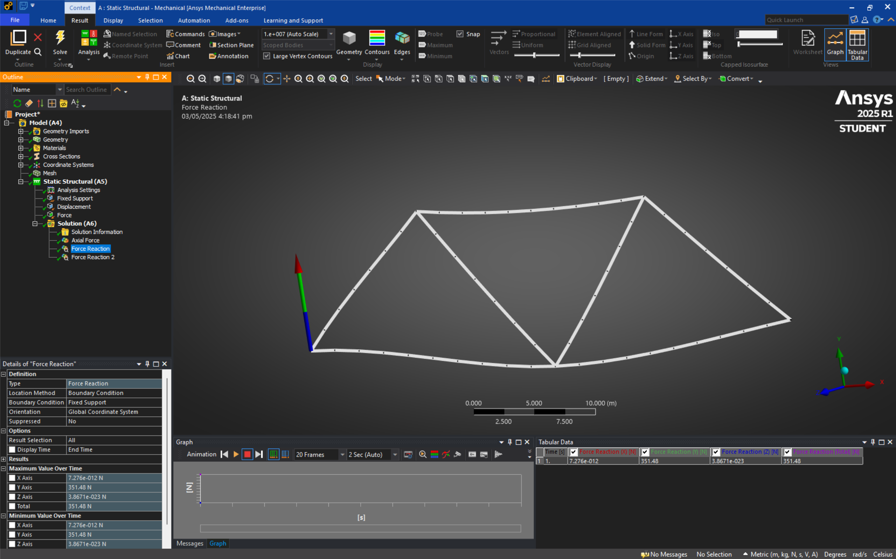
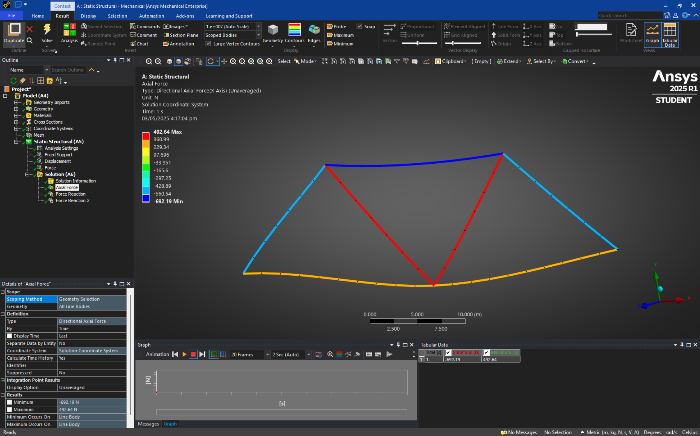
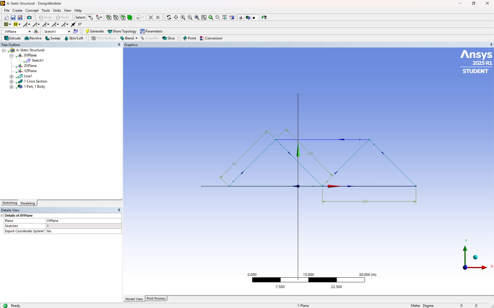

For this project, I carried out a static structural analysis of a 2D truss using ANSYS Mechanical. The truss was modeled using line elements, which represent the individual members. To simulate real-world conditions, I applied pin and roller supports to the appropriate joints and added a load at a specific point in the structure.
After setting up the model, I generated the mesh and ran the simulation to analyze how the structure would respond. The main goal was to calculate the support reactions and the internal forces in each truss member. This helped confirm whether the structure was in equilibrium under the applied loading conditions.
Working on this helped me understand how theoretical concepts like equilibrium and force distribution are applied in real simulations. It also gave me hands-on experience with using ANSYS for structural analysis, which was great for connecting what I've learned in mechanics to actual engineering tools.



